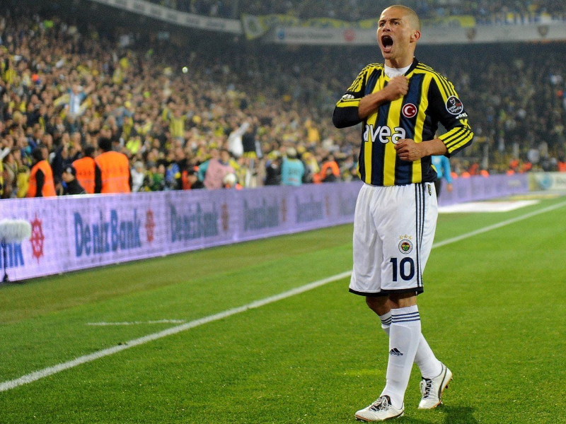

The Magician Football Player
Alex De SouzaAlexsandro de Souza (born 14 September 1977), commonly known as Alex, is a Brazilian football manager, pundit and retired footballer, who played as an attacking midfielder.
Alex is a former captain of the Brazil national team and Turkish club Fenerbahçe; throughout his career, he also played for Coritiba, Palmeiras, Flamengo and Cruzeiro inBrazil, and Parma in the Italian Serie A.
Alex first played professionally for Coritiba, a Brazilian football club from the state of Paraná, where he stayed from 1995 to 1997, when he was sold to Palmeiras, from 1999, a Rio-São Paulo cup title in 2000 and a Copa do Brasil title and a Copa Mercosur title in 1998. He left Palmeiras and signed with Flamengo, of Rio de Janeiro in In 2000, he returned to Palmeiras for a few months and then signed with Cruzeiro, where he stayed until 2002, when he returned to Palmeiras. After another great season,Alex was sold to Parma, of Italy. There he had a hard time with coach Cesare Prandelli, and eventually returned to Cruzeiro, after playing only friendly matches for theItalian team. At Cruzeiro Alex had the best performance in his career. Made team captain and wearing jersey number 10, he led his team to winning the Brazilian triplecrown (that is the State Championship, the Brasileirão and the Brazilian Cup). Cruzeiro won the Brazilian League (Brasileirão) with a record-breaking 100 points, 13ahead of the second place, Santos, with more than 100 goals scored in 46 games. He was eventually transferred to Fenerbahçe SK where he played for 8 years and ended up aclub legend. A statue in his honor was erected in Kadıköy, İstanbul.
Over the course of his career, Alex scored 421 goals in 1030 matches and produced a total of 363 assists.
Best Brazilian Footballer in Fenerbahce History
Alex was then sold by Cruzeiro in 2004 for 5 million euro to Fenerbahçe. He became Fenerbahçe captain after the team's captain Ümit Özat's transfer to Köln and vice-captains Tuncay's transfer to Middlesbrough and Rüştü Reçber's transfer to rival Beşiktaş. Alex scored his 100th goal in the Süper Lig for Fenerbahçe on 13 November 2010 against Gaziantepspor when they lost 2–1. At 33 years of age Alex scored a hat-trick against Bucaspor in the first 35 minutes of the game. Fenerbahçe won the match 5–2. His first goal in this game was Fenerbahçe's 3000th goal in the Süper Lig, so his kit and shoes used in the Bucaspor match are now shown in the club's museum. On 9 February 2011, he signed another two-year contract with Fenerbahçe.
On 15 May 2011, he scored five goals, including three penalties and a free-kick, in a 6–0 win against Ankaragücü.
After Fenerbahçe's league title for the year 2010–11, Alex won the golden boot award with 28 goals for the season, nine more than second place Burak Yılmaz. He made his900th career appearance on 12 September 2011 in the opening match of the Super Lig season, a 1–0 victory against Orduspor. In the Turkish Cup final on 16 May 2012 against Bursaspor, Alex netted Fenerbahçe's fourth and final goal of a 4–0 victory and was named the game's "Man of the Match".
On 15 September 2012, while Alex was still under contract with Fenerbahçe, a fan-funded statue of the player was unveiled in Kadıköy Yoğurtçu park. Alex's last goal forFenerbahçe came on 20 September in the Europa League, scoring Fenerbahçe's second goal in a 2–2 draw with Marseille. Alex's last appearance for the club came on 29September, playing the first half of a 2–0 defeat to Kasımpaşa in the Süper Lig. After a rift with coach Aykut Kocaman over the team's system, his contract with Fenerbahçe was terminated on 1 October. With Fenerbahçe he has concluded his impressive career in Turkey with 136 assists and 171 goals in 341 games. He left just five goals shy of matching the club record for league goals with 136 goals, held by former striker Aykut Kocaman.